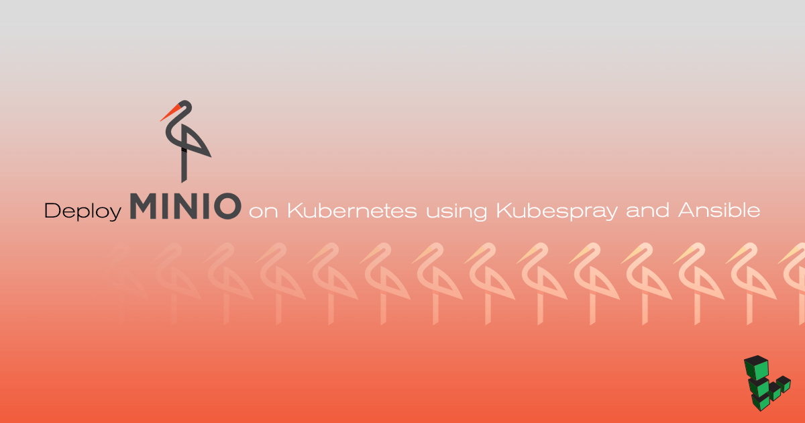
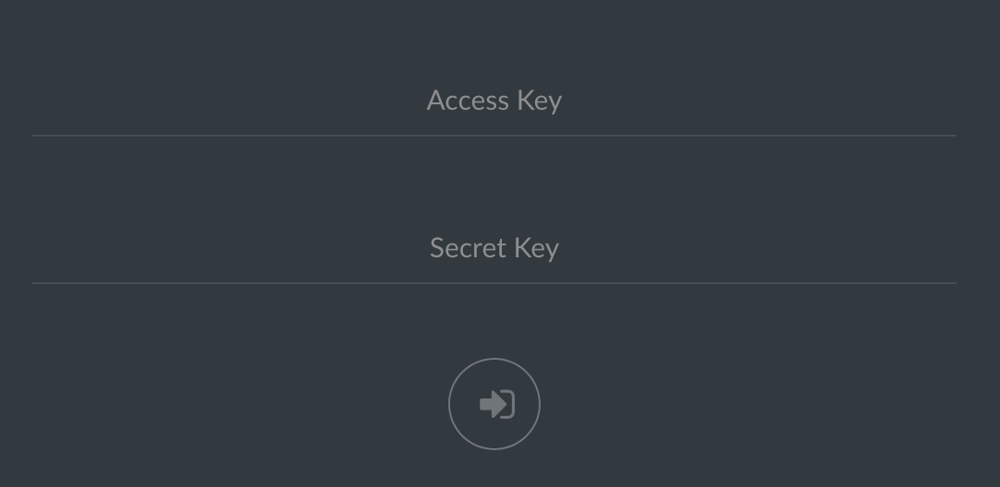
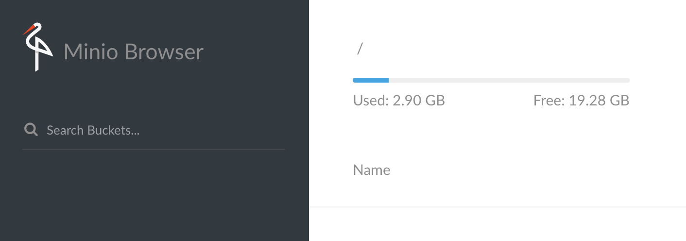

Deploy Minio on Kubernetes using Kubespray and Ansible
Updated by Linode Written by Sam Foo

What is Minio?
Minio is an open source, S3 compatible object store that can be hosted on a Linode. Deployment on a Kubernetes cluster is supported in both standalone and distributed modes. This guide uses Kubespray to deploy a Kubernetes cluster on three servers running Ubuntu 16.04. Kubespray comes packaged with Ansible playbooks that simplify setup on the cluster. Minio is then installed in standalone mode on the cluster to demonstrate how to create a service.
Before You Begin
For demonstration purposes, this guide installs
etcdand the Kubernetes master on the same node. High availability clusters will require a different configuration, which is beyond the scope of this guide.Each Linode to be used in the cluster should have a user with sudo privileges.
A cluster can be simulated locally using Minikube to get comfortable with Kubernetes clusters.
The IP addresses of each node in the cluster and their roles will be represented as
kubernetes-master-ip,etcd-ip, andslave-ip
NoteIf you do not want to install Ansible and other software locally, consider using another Linode as a jumpbox that will be used to connect with the master node.
Install Ansible
Update if needed.
sudo apt-get update sudo apt-get install software-properties-commonAdd the Ansible PPA; press enter when prompted.
sudo apt-add-repository ppa:ansible/ansibleAnsible is a simple IT automation platform that makes your applications and systems easier to deploy. Avoid writing scripts or custom code to deploy and update your applications— automate in a language that approaches plain English, using SSH, with no agents to install on remote systems. http://ansible.com/ More info: https://launchpad.net/~ansible/+archive/ubuntu/ansible Press [ENTER] to continue or ctrl-c to cancel adding it gpg: keyring `/tmp/tmp81pkp_0b/secring.gpg' created gpg: keyring `/tmp/tmp81pkp_0b/pubring.gpg' created gpg: requesting key 7BB9C367 from hkp server keyserver.ubuntu.com gpg: /tmp/tmp81pkp_0b/trustdb.gpg: trustdb created gpg: key 7BB9C367: public key "Launchpad PPA for Ansible, Inc." imported gpg: Total number processed: 1 gpg: imported: 1 (RSA: 1) OKUpdate again then install Ansible.
sudo apt-get update sudo apt-get install ansible
Additional Installation
Kubespray exists as a Git repository and requires python-netaddr for network address manipulation.
Install Git:
sudo apt install gitInstall
python-netaddr:sudo apt install python-netaddr
Modify Kubespray Configurations
Kubespray comes with several configuration options not shown in this guide. Refer to the documentation for more information on topics such as networking with Flannel, Helm installation, and large scale deployments.
Clone the Kubespray repository from Github then navigate into the repository.
git clone https://github.com/kubernetes-incubator/kubespray.git cd kubesprayCheck out a tag for the desired version of Kubespray. This guide is written for version 2.4.0.
git checkout -b tag/v.2.4.0Modify
~/kubespray/ansible.cfgto run Ansible playbooks on hosts as a given user. Replaceusernamewith your Unix account username inremote_user=usernameunder[defaults].- ~/kubespray/ansible.cfg
-
1 2 3 4 5 6 7 8 9 10 11 12 13 14 15[ssh_connection] pipelining=True ssh_args = -o ControlMaster=auto -o ControlPersist=30m -o ConnectionAttempts=100 -o UserKnownHostsFile=/dev/null #control_path = ~/.ssh/ansible-%%r@%%h:%%p [defaults] host_key_checking=False gathering = smart fact_caching = jsonfile fact_caching_connection = /tmp stdout_callback = skippy library = ./library callback_whitelist = profile_tasks roles_path = roles:$VIRTUAL_ENV/usr/local/share/kubespray/roles:$VIRTUAL_ENV/usr/local/share/ansible/roles:/usr/share/kubespray/roles deprecation_warnings=False remote_user=username
Copy the example inventory directory and rename it:
cp -r inventory/sample inventory/minioUse Kubespray’s inventory generator to build an inventory of hosts for Ansible. Declare the list of IP addresses for each Linode.
declare -a IPS=(kubernetes-master-ip etcd-ip slave-ip) CONFIG_FILE=inventory/minio/hosts.ini python3 contrib/inventory_builder/inventory.py ${IPS[@]}Note
Do not use hostnames when declaring$IPS. Only IP addresses are supported by the inventory generator at this time.Example configuration for the cluster in this guide.
- ~/kubespray/inventory/minio/hosts.ini
-
1 2 3 4 5 6 7 8 9 10 11 12 13 14 15 16 17 18 19 20 21 22 23 24 25[all] node1 ansible_host=kubernetes-master-ip ip=kubernetes-master-ip node2 ansible_host=etcd-ip ip=etcd-ip node3 ansible_host=slave-ip ip=slave-ip [kube-master] node1 [kube-node] node2 node3 [etcd] node1 [k8s-cluster:children] kube-node kube-master [calico-rr] [vault] node1 node2 node3
Uncomment the line
docker_dns_servers_strict: falsein~/kubernetes/inventory/minio/group_vars/all.yml
Prepare Hosts for Ansible
Before Ansible can properly run Kubespray’s playbooks, the hosts must have a passwordless sudo user enabled, and swap disabled for Kubernetes. Make sure the specified user exists on each Linode prior to starting these steps. This section shows how to copy SSH keys to each Linode and modify the sudoers file over SSH.
Create a private key if you do not have one:
ssh-keygen -b 4096Copy your SSH key to each IP listed in the inventory using the
$IPSvariable declared earlier and replaceusernamewith the username for each of the hosts.for IP in ${IPS[@]}; do ssh-copy-id username@$IP; done
Create Passwordless Sudo on Nodes
Below is a loop that adds the line username ALL=(ALL:ALL) NOPASSWD: ALL to the last line of the sudoers file. You will be prompted for the password for each server.
for IP in ${IPS[@]}; do ssh -t username@$IP "echo 'username ALL=(ALL:ALL) NOPASSWD: ALL' | sudo EDITOR='tee -a' visudo"; done
Disable swap
Add this snippet below at the end of ~/kubespray/roles/bootstrap-os/tasks/main.yml to disable swap using Ansible.
- ~/kubespray/roles/bootstrap-os/tasks/main.yml
-
1 2 3 4 5 6 7 8- name: Remove swapfile from /etc/fstab mount: name: swap fstype: swap state: absent - name: Disable swap command: swapoff -a
Run Ansible Playbook
Before running the Ansible playbook, make sure firewalls are turned off to avoid unexpected errors.
Run the cluster.yml Ansible playbook. If your private key is named differently or located elsewhere, add --private-key=/path/to/id_rsa to the end.
ansible-playbook -i inventory/minio/hosts.ini cluster.yml -b -v
CautionThis could take up to 20 minutes.
Add or Remove Nodes
Navigate into
~/kubespray/inventory/minio/hosts.iniand add the IP address of the new node.Run ssh-copy-id to copy your SSH key to the new node:
ssh-copy-id username@new-node-ipRun the
scale.ymlAnsible playbook:ansible-playbook -i inventory/minio/hosts.ini scale.yml -b -vSSH into the Kubernetes master node to list all the available nodes:
kubectl get nodesTo remove a node, simply turn off the server and clean up on the master node with:
kubectl delete node <ip-of-node>
Minio on Kubernetes
The commands in this section should be executed from the kubernetes-master Linode.
Create a Persistent Volume
Persistent Volumes(PV) are an abstraction in Kubernetes that represents a unit of storage provisioned in the cluster. A PersistentVolumeClaim(PVC) will allow a pod to consume the storage set aside by a PV. This section creates a PV of 15Gi (gibibytes) then allow Minio to claim 10Gi of space.
On the Kubernetes master node, create a file called
minio-volume.yamlwith the following YAML below. Replaceusernameon thehostPathwith the appropriate path.- minio-volume.yaml
-
1 2 3 4 5 6 7 8 9 10 11 12 13 14kind: PersistentVolume apiVersion: v1 metadata: name: minio-pv-volume labels: type: local spec: storageClassName: manual capacity: storage: 15Gi accessModes: - ReadWriteOnce hostPath: path: "/home/username"
Create the PV:
kubectl create -f minio-volume.yamlCreate a PVC with
minio-pvc.yaml:- minio-pvc.yaml
-
1 2 3 4 5 6 7 8 9 10 11 12 13apiVersion: v1 kind: PersistentVolumeClaim metadata: name: minio-pv-claim labels: app: minio-storage-claim spec: storageClassName: manual accessModes: - ReadWriteOnce resources: requests: storage: 10Gi
Create the PVC:
kubectl create -f minio-pvc.yaml
Create a Deployment
Create a Deployment configuration in
minio-deployment.yamland substituteusernameon the last line. The access and secret key are in the YAML file.- minio-deployment.yaml
-
1 2 3 4 5 6 7 8 9 10 11 12 13 14 15 16 17 18 19 20 21 22 23 24 25 26 27 28 29 30 31 32 33 34 35 36 37 38 39 40 41 42 43apiVersion: apps/v1 # for k8s versions before 1.9.0 use apps/v1beta2 and before 1.8.0 use extensions/v1beta1 kind: Deployment metadata: # This name uniquely identifies the Deployment name: minio-deployment spec: selector: matchLabels: app: minio strategy: type: Recreate template: metadata: labels: # Label is used as selector in the service. app: minio spec: # Refer to the PVC created earlier volumes: - name: storage persistentVolumeClaim: # Name of the PVC created earlier claimName: minio-pv-claim containers: - name: minio # Pulls the default Minio image from Docker Hub image: minio/minio:latest args: - server - /storage env: # Minio access key and secret key - name: MINIO_ACCESS_KEY value: "minio" - name: MINIO_SECRET_KEY value: "minio123" ports: - containerPort: 9000 hostPort: 9000 # Mount the volume into the pod volumeMounts: - name: storage # must match the volume name, above mountPath: "/home/username"
Create the Deployment.
kubectl create -f minio-deployment.yaml
Create a Service
Create a file for the service called
minio-service.yaml- minio-service.yaml
-
1 2 3 4 5 6 7 8 9 10 11 12apiVersion: v1 kind: Service metadata: name: minio-service spec: type: LoadBalancer ports: - port: 9000 targetPort: 9000 protocol: TCP selector: app: minio
Deploy the Minio service:
kubectl create -f minio-service.yamlSee a list of running services. Under the column
PORT(S), you can see that the Minio service is running internally on port 9000, with 30593 exposed externally by the LoadBalancer.kubectl get servicesNAME TYPE CLUSTER-IP EXTERNAL-IP PORT(S) AGE kubernetes ClusterIP 10.233.0.1443/TCP 1d minio-service LoadBalancer 10.233.28.163 9000:30593/TCP 20m In a browser, navigate to the public IP address of any of the Linodes in the cluster, at the exposed port (30593 in the example above):

Minio has similar functionality to S3: file uploads, creating buckets, and storing other data.

More Information
You may wish to consult the following resources for additional information on this topic. While these are provided in the hope that they will be useful, please note that we cannot vouch for the accuracy or timeliness of externally hosted materials.
Join our Community
Find answers, ask questions, and help others.
This guide is published under a CC BY-ND 4.0 license.